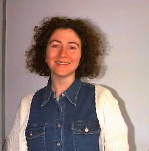

Joann Slater
Department of Computation, UMIST, Sackville Street, P.O. Box 88, Manchester M60 1QD,
United Kingdom
tel: +44 161 2003335 fax: +44 161 2003324
email:joann@sna.co.umist.ac.uk
Joann is helping with the administration of TimeLab. She has been working part-time in TimeLab since 1994 and
she is now one of the most experienced members of the laboratory.
My interests include Reading, Theatre, Cinema, Music, Cooking and Eating, Walking, Travel and Socialising.